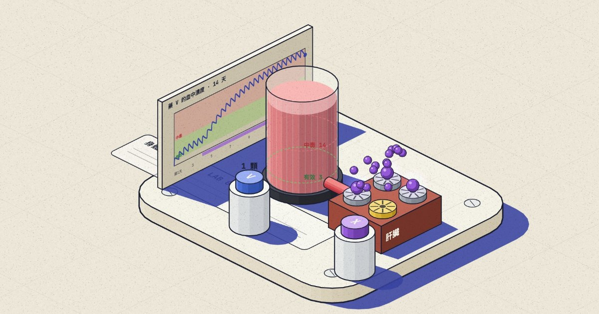
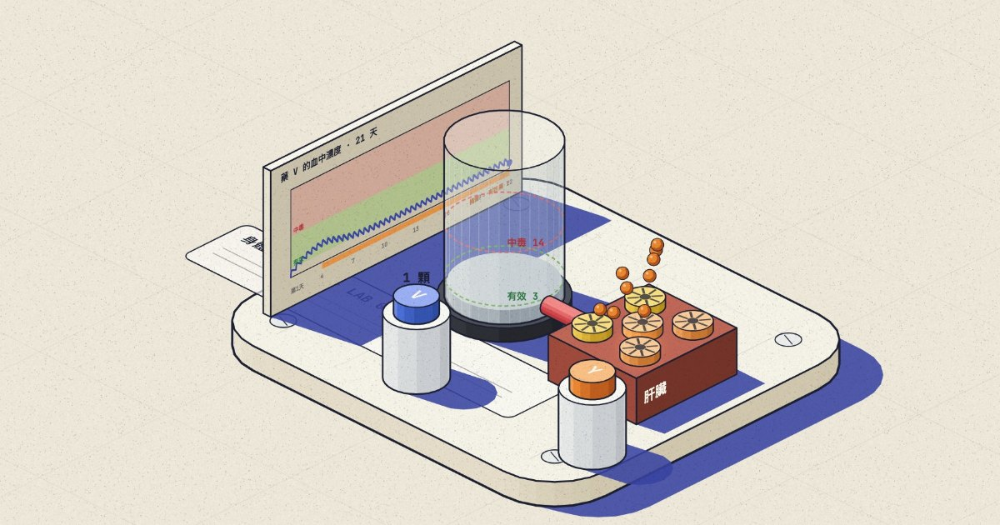

學習路線/階段 4
階段 4 / 6，第 7–8 週
副作用與交互作用
你的目標：弄懂副作用是怎麼來的，以及兩種藥（或藥和食物）一起吃時，為什麼會互相影響。
階段 3 講藥怎麼作用在目標上；可是藥會跟著血液跑遍全身，也可能黏上不只一種受體，這就是很多副作用的來源。另一個常見的問題是交互作用：一種藥可能擋住或加速另一種藥的代謝，讓它的濃度變高或變低；兩種效果相似的藥一起吃，效果也會疊在一起。
本階段的 Lab

Lab 01 新
副作用從哪裡來：吃鼻水藥，為什麼會想睡
鼻子和腦有同一種受體，唾液腺有長得像的受體。比較兩種鼻水藥，看副作用從哪裡來，以及為什麼減量不一定能解決。

Lab 02 新
酵素被擋住：一起吃，濃度為什麼變高
加吃一種會擋住肝臟酵素的藥，原本的藥排不掉，濃度一天天爬高。加藥時要減量，停藥時也要記得加回來。

Lab 03 新
酵素被加速：一起吃，藥為什麼變沒效
另一種藥讓肝臟多做酵素，原本的藥一週後就不夠了。停掉它時更要小心：多做的酵素慢慢退掉，幾天後才中毒。

Lab 04 新
效果疊加：兩種會想睡的東西一起吃
安眠藥、會想睡的鼻水藥、酒，各自都只是有點想睡。疊起來越過紅線，連呼吸都會被壓低。
要學什麼
- 副作用的兩個來源同一種受體也在別的器官，或藥黏上別種受體。（Lab 01）
- 選擇性與分布藥能不能進腦、黏不黏別的受體，決定療效和副作用能不能分開。（Lab 01）
- 代謝型交互作用擋住或加速代謝酵素，讓另一種藥的濃度變高或變低；加藥、停藥都要注意。（Lab 02、03）
- 效果型交互作用兩種效果相似的藥一起吃，效果會疊加。（Lab 04）
看到不熟的詞，可以查本頁的名詞表。
常見錯誤
覺得吃了會想睡，就自己把藥減半。如果副作用和療效來自同一種受體，減量會讓療效一起變少，可能變成「沒效又想睡」。有副作用時先問醫師或藥師，可能可以換一種選擇性更好的藥。
練習
找一份家裡藥品的仿單，翻到「副作用」或「不良反應」那一段，挑兩個副作用，試著推論它可能來自哪裡：是同一個作用目標也在別的器官，還是藥作用到別的目標？再看看仿單有沒有寫「可能引起嗜睡，服藥後避免開車」之類的提醒。看不懂的地方記下來問藥師。
| 藥品 | 示範鼻水藥 A 錠（虛構） |
| 作用目標 | H 受體（拮抗劑） |
| 副作用 1 | 嗜睡：腦裡也有 H 受體，藥能進腦 |
| 副作用 2 | 口乾：藥也會擋住唾液腺的 M 受體 |
| 我的推論 | 嗜睡和療效來自同一種受體，減量會一起變少；要開車的人可以問藥師有沒有較不會進腦的藥。 |
名詞表
副作用
藥在一般劑量下出現的、不是用藥目的的作用。有些很輕微，有些需要停藥或換藥。
選擇性
藥只作用在目標受體、不碰其他受體的程度。選擇性越高，作用到別的受體造成的副作用越少，但通常是相對的，劑量高時仍可能出現。
血腦屏障
腦部血管的特殊構造，會擋住很多物質進入腦。藥能不能通過，影響它會不會造成嗜睡等腦部的作用。
H 受體（組織胺受體）
組織胺作用的受體。鼻子的 H 受體和過敏、流鼻水有關；腦裡的 H 受體和清醒有關。
M 受體（毒蕈鹼受體）
乙醯膽鹼作用的一種受體，和唾液分泌、腸胃蠕動等有關。被擋住時可能口乾、便秘。
交互作用
兩種藥（或藥和食物、保健食品）一起使用時互相影響，讓效果或副作用變強、變弱。
代謝酵素
肝臟裡負責分解藥物的蛋白質。被擋住時藥排得慢、濃度變高；被加速時藥排得快、濃度變低。
完成這個階段後，你應該能夠
0 / 7
你的進度保存在這個瀏覽器裡。